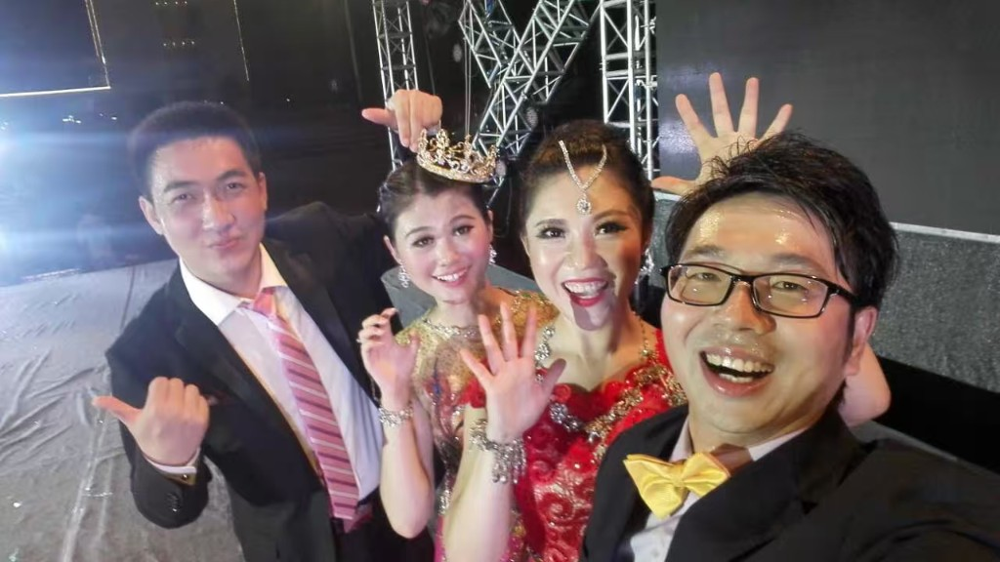

13 → 7 · +85%
Turnaround
佛山直营店经营改善
- 接手亏损直营店，第 3 个月实销+成本达成体系双标杆，扭亏为盈
- 团队从 13 人精简到 7 人（减少 46%），零劳务纠纷过渡
- 人效提升 85%，实销峰值 62 台 / 月，2024 年 3 月目标完成率 117%
Projects
从新能源汽车一线经营改善到 AI 落地：门店经营、团队扩张、薪酬改革、用户洞察、新业务探索与审计智能化。
读用户评论里的产品评价和营销触点，做品牌对比。独立测试 Span-F1 0.6705。详见论文研究页 →
针对审计报告写作效率低、校对标准不统一的痛点，设计完全离线的智能校对与表述优化系统。统一 JSON 接口 + 双态 UI，混合检索（bge-m3 向量 + jieba 倒排），embedding 缓存加速。离线部署 LM Studio + Qwen3.6-9B，5235 份审计语料支撑，7 条概念校验铁律可覆盖 85% 常见审计表述规范问题。
▲ 独立开发 MVP，从需求调研、架构设计到可部署交付全程独立完成。面向跨境审计场景，设计 AI 辅助审计报告分析系统，涵盖 RAG、多语言文档解析、风险仪表盘与合规架构设计。主导项目总结与技术方案撰写，PPT 三版交叉评审（Qwen / GLM / 豆包融合），设计 L0–L3 四层数据安全与合规架构。输出 12 张真实 MVP 截图。
▲ 多模型交叉验证方法论：3 个 AI 各出一版 → 互相挑错 → 融合定稿。2 个月内团队从 300 人扩张至 650+，搭建慕课平台、内训师体系与晋升机制。
▲ 2 个月内完成 350+ 人招聘任职全流程，零批量离职。主导销售岗位薪酬体系改革，设计「管理 + 业务」双通道晋升路径，助力 2 位储备合伙人与 6 位经理完成晋升，与业务增长形成联动。
▲ 新方案实施后一线销售留存率提升约 30%。8 个月用户体验活动，沉淀 3,000+ 产品提升点，并复制「柳州模式」至山东 5 城。
新业务探索期推进 3 家高价值客户进入方案沟通阶段，摸排 20+ 线索企业，形成一客一案解决方案。
▲ 从 0 到 1 跑通 B2B 销售 SOP，形成可复用框架。